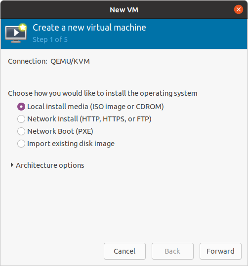
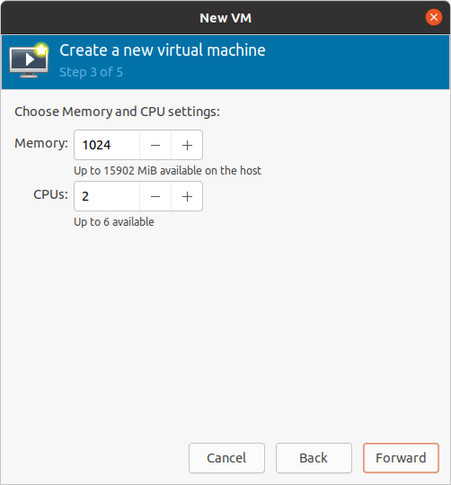
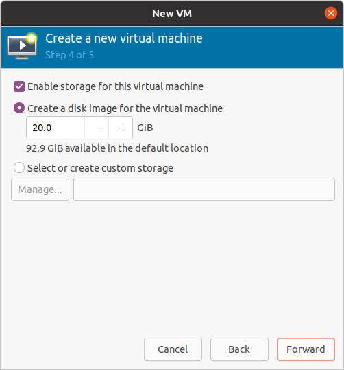
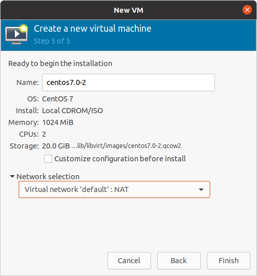
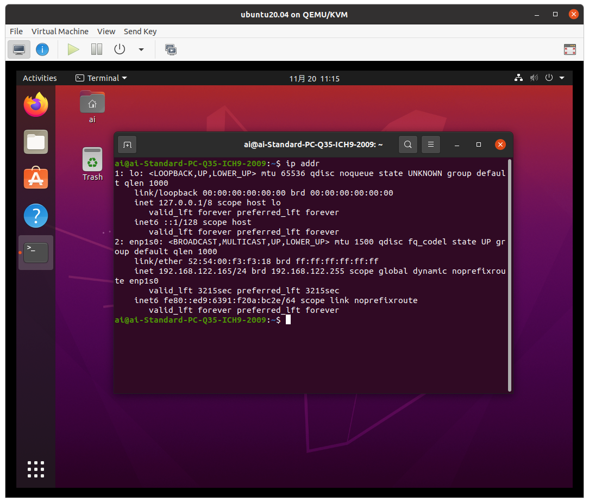

KVM を使って仮想マシンを作成する (試験勉強用)
0. はじめに
Linux の試験を受けようと考えている．普段家で使っている OS は Ubuntu 20.04 であるが，試験勉強用の環境を普段使っている OS とは隔離された形で作りたいと思った．
そこで，今回は Ubuntu の仮想化機能である KVM を用いて仮想マシンを作成する．あくまで試験勉強用の環境であり，一般用途として使う際に適しているとは限らない．
目次
1. 構成と仕様
試験では Debian 系の OS と Red Hat 系の OS の両方の知識が求められると考えられるので，両方を導入する．Debian 系 OS として Ubuntu 20.04 を導入し，Red Hat 系 OS として CentOS 7 を導入する．
また，練習用途として利用するために，次のようなことを求める．
- インターネットに接続できる．
- ホスト OS と ssh で接続できる．
2. KVM の導入と仮想マシンの作成
2.1. KVM の導入
仮想化機能の KVM を導入する (参考:How to Install KVM on Ubuntu 20.04)．
(Host)
sudo apt -y install virt-manager qemu-system
KVM をインストールすると，デフォルトで virbr0 というブリッジが作成される (参考: KVMでゲストOSをブリッジ接続する)．
(Host)
tcbn@tcbn-V530-15ICR:~$ ifconfig virbr0
virbr0: flags=4099<UP,BROADCAST,MULTICAST> mtu 1500
inet 192.168.122.1 netmask 255.255.255.0 broadcast 192.168.122.255
ether 52:54:00:fe:91:8f txqueuelen 1000 (Ethernet)
RX packets 291159 bytes 16410705 (16.4 MB)
RX errors 0 dropped 0 overruns 0 frame 0
TX packets 582378 bytes 822922760 (822.9 MB)
TX errors 0 dropped 0 overruns 0 carrier 0 collisions 0
192.168.122.0 というネットワークであり，ホスト OS は 192.168.122.1 という IP address でゲスト OS と接続できる．
2.2. 仮想マシンの作成
手順
まず，ISO ファイルを入手する．
(Host)
virt-manager
で virt-manager を起動し，“Create a new virtual machine” を選択する．基本的に手順にしたがって新しい仮想マシンを作成する．ネットワークは，Virtual network ‘default’: NAT を選択する (これを選択するとインターネットに接続できたため．他の方法もあるだろう)．





あとは通常の OS のインストールと同様の操作である．
3. SSH 接続の設定
以降，Ubuntu での操作を載せる．CentOS は異なるコマンドだが，同様の操作をすることで実現できる．
OS のインストール後は update と upgrade を行う．
(Guest)
sudo apt update && sudo apt -y upgrade
次に，SSH 接続のために OpenSSH Server を導入する．
(Guest)
sudo apt -y install openssh-server
また，ssh.service が active か，マシンの起動後に active になるか (enable か) を確認する．
(Guest)
sudo systemctl is-enabled ssh
sudo systemctl status ssh

ゲスト OS の IP address を ip addr で確認する．

今回，Ubuntu 20.04 には 192.168.122.165 という IP address が割り当てられている．この IP address は DHCP で割り当てられたものである1．
ホスト OS とゲスト OS 間の接続ができるかどうか，確認する．
ホスト OS → ゲスト OS:
tcbn@tcbn-V530-15ICR:~$ ping -c 3 192.168.122.165
PING 192.168.122.165 (192.168.122.165) 56(84) bytes of data.
64 bytes from 192.168.122.165: icmp_seq=1 ttl=64 time=0.544 ms
64 bytes from 192.168.122.165: icmp_seq=2 ttl=64 time=0.201 ms
64 bytes from 192.168.122.165: icmp_seq=3 ttl=64 time=0.366 ms
--- 192.168.122.165 ping statistics ---
3 packets transmitted, 3 received, 0% packet loss, time 2043ms
rtt min/avg/max/mdev = 0.201/0.370/0.544/0.140 ms
ゲスト OS → ホスト OS:

両方向に接続できていることが確認される．
SSH 接続を行う．学習用環境なので，パスワード認証で十分だろう． ホスト OS 側で ssh [username]@[IP address] とする．初回接続時は確認が出るが，yes を選択する．
(Host)
tcbn@tcbn-V530-15ICR:~$ ssh ai@192.168.122.165
ai@192.168.122.165's password:
Welcome to Ubuntu 20.04.3 LTS (GNU/Linux 5.11.0-40-generic x86_64)
* Documentation: https://help.ubuntu.com
* Management: https://landscape.canonical.com
* Support: https://ubuntu.com/advantage
0 updates can be applied immediately.
Your Hardware Enablement Stack (HWE) is supported until April 2025.
Last login: Sat Nov 20 09:08:44 2021 from 192.168.122.1
毎回このコマンドを打つのは面倒 (特に，公開鍵認証を用いている場合) なので，ホスト OS 側の ~/.ssh/config ファイルに設定を書く (パスはこれではない可能性もある)．
Host Host_name
HostName [IP address]
User [username]
という書式である (参考: ssh_config(5) - Linux man page)．ssh Host_name で接続できる2．
4. まとめ
学習用の環境を仮想マシンで作った．特にインターネット接続あたりで詰まったので，備忘録としてまとめた．